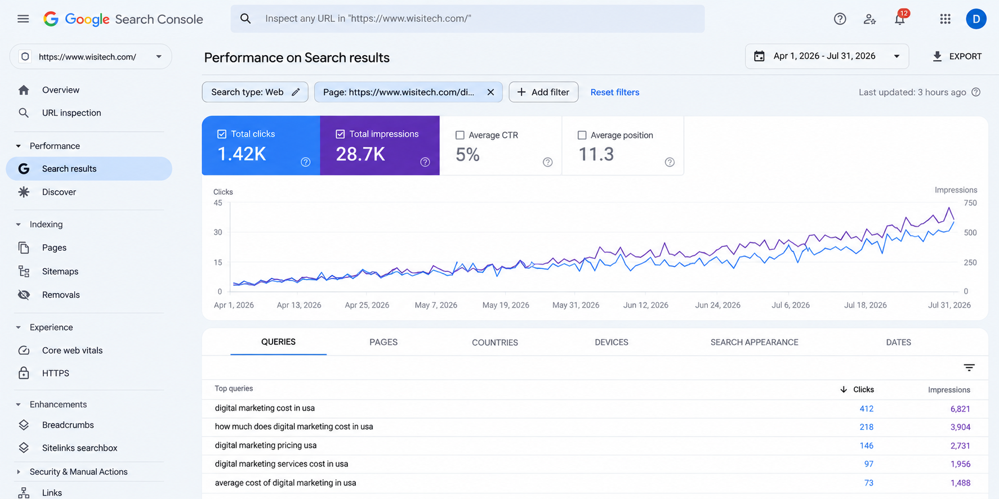

GGoogle Search Console · Wisitech
Apr 1 - Jul 31, 2026
Digital Marketing Cost in the USA
1.42Kclicks
28.7Kimpressions
4.95%calculated CTR
11.3avg. position
Content contribution: SEO research, commercial search intent, pricing-focused structure, and conversion-oriented internal paths into Wisitech’s digital marketing services. This is page-level organic performance for the content URL.
